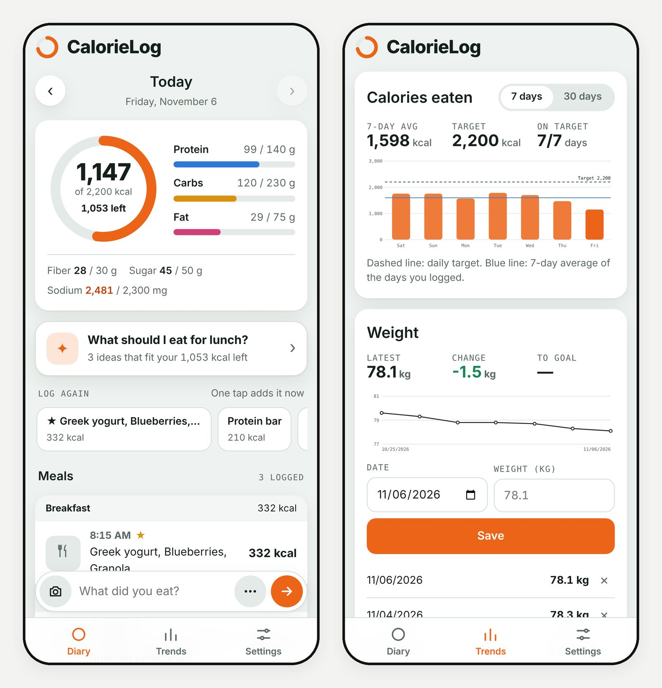

CalorieLog
A mobile web app where a meal photo or a sentence becomes calories and macros, adds up in a simple daily diary, and shows trends over time.
- Role
- Idea, design and build, with Claude as coding partner
- Platform
- Mobile web app, kept on the phone home screen
- Input
- A meal photo or a plain-English sentence
- Status
- Live; browser demo available with sample data

01 · Problem
What need does it solve?
Most calorie trackers ask for a lot of typing: search a database, pick the closest match, set a weight. After a few days the logging stops, and then the numbers stop meaning anything.
I wanted logging to take seconds. Show it what I ate, in a photo or a sentence, and get a reasonable estimate I can correct, so the day still adds up and the trend is worth looking at.
02 · Solution
How it works
One box at the bottom of the screen takes a photo or a sentence. From there the app:
- Picks out each food, estimates the portion and shows calories, protein, carbs and fat, plus fiber, sugar and sodium
- Lets me correct a portion with a tap before anything is saved
- Files the meal under breakfast, lunch, dinner or snack by the time of day
- Shows the day as a calorie ring and macro bars against daily targets, with one-tap logging of meals eaten before
- Charts the last 7 or 30 days against the target, next to a simple weight log
- Sends weekly eating-habit suggestions by email, written by a scheduled AI task from the logged data
03 · Architecture
How the system fits together
04 · Technology
What it is built with
| Interface | Plain JavaScript mobile web app; no framework and no build step |
|---|---|
| Recognition | AI vision on meal photos to find foods and estimate portions |
| Targets | Calories, protein, carbs, fat, fiber, sugar and sodium |
| Suggestions | Scheduled AI task that reads the diary and emails weekly suggestions |
| Public demo | Runs fully in the browser: sample photos with results prepared in advance, typed meals read by a built-in parser and food table, diary saved in browser storage |
05 · Challenges
Hard parts and how they were solved
A photo gives an estimate, not a measurement
Portions are hard to judge from a picture. Each food is listed separately with its estimate, and a tap on + or − corrects the portion before saving, so a wrong guess is a quick fix instead of a wrong day.
Reading a sentence without a server
The demo has to understand typed meals in the browser. A small parser handles quantities, number words like "a couple", units, size words and separators, and matches foods against a built-in table of typical serving values.
Keeping logging fast
One input box handles both photos and text, the meal type comes from the time of day, and meals eaten before can be logged again with one tap.
Being honest in the public demo
A public page cannot ship an AI key. The sample photos use results prepared in advance and say so, while typed meals are processed live in the browser.
06 · Results
What came out of it
- Logging a meal takes a photo or a sentence and a quick check, instead of searching a food database.
- The day is visible at a glance as a calorie ring, macro bars and fiber, sugar and sodium against their targets.
- Seven- and 30-day trends and a weight log show whether the habit is holding, and a weekly email turns the data into suggestions.